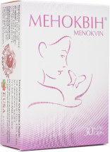
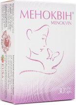

Климакс
естественная реакция организма на угасание функции яичников
-
1/3
женщин на планете находится в пре- и постменопаузе
-
80%
женщин в мире отмечают у себя патологический климакс
-
72%
женщин страдают приливами
Основные симптомы климакса
Климактерический синдром возникает, как правило, в перименопаузе, но у некоторых женщин может продолжаться на протяжении 10-20 лет после менопаузы. Встречается у 80% женщин.

 

Негормональный препарат Меноквин
Сбалансированный комплекс растительных фитоэстрогенов с седативным компонентом снижает климактерическую симптоматику
- Воздействует на:
- Частоту и интенсивность приливов;
- Нормализует психоэмоциональный фон;
- Улучшает качество сна;
- Оказывает гипотензивное действие на сердечно-сосудистую систему;
- Снижает риск атеросклероза, улучшает память;
- Способствует поддержанию гормонального фона в период менопаузы;
- Повышает общий тонус, улучшает общее самочувствие.

Одна капсула Меноквина содержит

Экстракта корня цимифуги кистевидной
- Нормализует психо- эмоциональное состояние
- Устраняет вегето-сосудистые нарушения препятствует развитию остеопороза
- Восстанавливает эластичность и трофику кожи и слизистых
Экстракта корня пуэрарии лопастной
-
Эстрогеноподобное действие:
- предотвращает приливы и потливость o контроль веса и тканевой жидкости
- стимулирует функцию яичников
- повышает эластичность кожи
- улучшает трофику слизистых
- Гипотензивное действие
- Антиоксидантное действие
Экстракта корня дудника китайского
Фитоэстрогены
-
Эстрогеноподобное действие:
- предотвращает приливы и потливость
- контроль веса и тканевой жидкости
- тонизирующий эффект на организм женщины
Полисахариды
- Гепатопротекторный эффект
β-ситостерин
- Гипохолестеринемическое действие
- Повышает сексуальное влечение
Феруловая кислота
- Антиоксидантный эффект
Экстракта травы пассифлоры инкарнатной
Флавоноиды
- Нормализует психо- эмоциональное состояние улучшает качество сна
- Обладает мягким седативным действием устраняет тревожно-астеническую симптоматику
Гарманоловые алкалоиды (гарман, гармил и гармол)
- Спазмолитическое действие
- Гипотензивное и коронаролитическое действие
Высокая эффективность фитоэстрогенов экстрактов корня цимицифуги, корня дудника китайского, корня пуэрарии лопастной, травы пассифлоры подтверждена клиническими исследованиями, проведенными в соответствии с положениями доказательной медицины. В ходе клинического исследования нескольких групп женщин, принимавших Меноквин, плацебо и схожие препараты было доказано, что по эффективности, оцениваемой по шкале оценки менопаузы (шкала Грина и индекс Купермана), он сопоставим с конъюгированными эстрогенами.
У женщин, принимавших Меноквин, отмечалось существенное ослабление или полное исчезновение неприятных симптомов, свойственных климактерическому периоду — раздражительность, утомляемость, «приливы», тревожность, нарушение сна, снижение либидо.
Преимущиства негормональной терапии

Отсутствие побочных эффектов,
присущих гормон-содержащим средствам фитоэстрогены имеют сходную с эндогенными эстрогенами структуру и могут взаимодействовать с эстрогенными рецепторами, НО их активность в десятки и сотни раз ниже, т.е. они обеспечивают мягкое восстановление гормональной регуляции.

Исключена передозировка
организм получает в микродозах суточную норму и расходует её на биохимические реакции по мере поступления, а лишнее выводит в непереработанном виде.

Отсутствие эффекта
привыкания фитогормональная терапия оказывает в большей степени стимулирующий эффект на организм женщины, а не заместительный – как гормонотерапия.

Меноквин
- Избавляет от приливов жара и потливости.
- Восстанавливает внутреннее равновесие и нормализует сон.
- Мягко влияет на организм и хорошо переносится.
- Не требует сложной диагностики перед назначением.
- Имеет удобный прием — 1 капсула 1 раз в сутки.
Появление на рынке Украины препарата Меноквин, сочетающего в себе все фармакологические свойства экстрактов корня цимицифуги, корня дудника китайского, корня пуэрарии лопастной, травы пассифлоры, позволит эффективно помогать женщинам с климактерическими расстройствами и вернет повседневную жизнь в нормальное русло.
Полезная информация
Что такое климакс
Климакс — физиологический период в жизни женщины, характеризующийся угасанием репродуктивной функции вследствие гормональных изменений в организме.
Климакс является естественным этапом в жизни женщины и характеризуется обратными изменениями в репродуктивной системе — прекращением детородной и менструальной функций. Слово «климакс» происходит от греческого «klimax» — лестница, выражающего символические ступени, ведущие от расцвета специфических женских функций к их постепенному угасанию.
Причиной наступления климакса является прекращение работы яичников и снижение уровня женских половых гормонов (эстрогенов и прогестерона) в крови.
Климакс может вызывать дисфункциональные маточные кровотечения, серьезные нервно-психические расстройства. Для предотвращения возможных сопутствующих заболеваний, связанных с гормональным дефицитом (мастопатия, рак молочной железы, рак женских половых органов, опущение половых органов, остеопороз и т.д.) нужно обращаться к специалистам (гинекологу, эндокринологу и т.п.).
Чем климакс отличается от менопаузы?
Климакс — физиологический период в жизни женщины, характеризующийся угасанием репродуктивной функции вследствие гормональных изменений в организме.
Климакс является естественным этапом в жизни женщины и характеризуется обратными изменениями в репродуктивной системе — прекращением детородной и менструальной функций. Слово «климакс» происходит от греческого «klimax» — лестница, выражающего символические ступени, ведущие от расцвета специфических женских функций к их постепенному угасанию.
Причиной наступления климакса является прекращение работы яичников и снижение уровня женских половых гормонов (эстрогенов и прогестерона) в крови.
Климакс может вызывать дисфункциональные маточные кровотечения, серьезные нервно-психические расстройства. Для предотвращения возможных сопутствующих заболеваний, связанных с гормональным дефицитом (мастопатия, рак молочной железы, рак женских половых органов, опущение половых органов, остеопороз и т.д.) нужно обращаться к специалистам (гинекологу, эндокринологу и т.п.).
Как реагируют женщины на климакс?
Климакс — физиологический период в жизни женщины, характеризующийся угасанием репродуктивной функции вследствие гормональных изменений в организме.
Климакс является естественным этапом в жизни женщины и характеризуется обратными изменениями в репродуктивной системе — прекращением детородной и менструальной функций. Слово «климакс» происходит от греческого «klimax» — лестница, выражающего символические ступени, ведущие от расцвета специфических женских функций к их постепенному угасанию.
Причиной наступления климакса является прекращение работы яичников и снижение уровня женских половых гормонов (эстрогенов и прогестерона) в крови.
Климакс может вызывать дисфункциональные маточные кровотечения, серьезные нервно-психические расстройства. Для предотвращения возможных сопутствующих заболеваний, связанных с гормональным дефицитом (мастопатия, рак молочной железы, рак женских половых органов, опущение половых органов, остеопороз и т.д.) нужно обращаться к специалистам (гинекологу, эндокринологу и т.п.).
Когда возникает климакс?
Климакс — физиологический период в жизни женщины, характеризующийся угасанием репродуктивной функции вследствие гормональных изменений в организме.
Климакс является естественным этапом в жизни женщины и характеризуется обратными изменениями в репродуктивной системе — прекращением детородной и менструальной функций. Слово «климакс» происходит от греческого «klimax» — лестница, выражающего символические ступени, ведущие от расцвета специфических женских функций к их постепенному угасанию.
Причиной наступления климакса является прекращение работы яичников и снижение уровня женских половых гормонов (эстрогенов и прогестерона) в крови.
Климакс может вызывать дисфункциональные маточные кровотечения, серьезные нервно-психические расстройства. Для предотвращения возможных сопутствующих заболеваний, связанных с гормональным дефицитом (мастопатия, рак молочной железы, рак женских половых органов, опущение половых органов, остеопороз и т.д.) нужно обращаться к специалистам (гинекологу, эндокринологу и т.п.).
Наиболее частые проявления
Климакс — физиологический период в жизни женщины, характеризующийся угасанием репродуктивной функции вследствие гормональных изменений в организме.
Климакс является естественным этапом в жизни женщины и характеризуется обратными изменениями в репродуктивной системе — прекращением детородной и менструальной функций. Слово «климакс» происходит от греческого «klimax» — лестница, выражающего символические ступени, ведущие от расцвета специфических женских функций к их постепенному угасанию.
Причиной наступления климакса является прекращение работы яичников и снижение уровня женских половых гормонов (эстрогенов и прогестерона) в крови.
Климакс может вызывать дисфункциональные маточные кровотечения, серьезные нервно-психические расстройства. Для предотвращения возможных сопутствующих заболеваний, связанных с гормональным дефицитом (мастопатия, рак молочной железы, рак женских половых органов, опущение половых органов, остеопороз и т.д.) нужно обращаться к специалистам (гинекологу, эндокринологу и т.п.).
Как помочь женщине в период климакса?
Климакс — физиологический период в жизни женщины, характеризующийся угасанием репродуктивной функции вследствие гормональных изменений в организме.
Климакс является естественным этапом в жизни женщины и характеризуется обратными изменениями в репродуктивной системе — прекращением детородной и менструальной функций. Слово «климакс» происходит от греческого «klimax» — лестница, выражающего символические ступени, ведущие от расцвета специфических женских функций к их постепенному угасанию.
Причиной наступления климакса является прекращение работы яичников и снижение уровня женских половых гормонов (эстрогенов и прогестерона) в крови.
Климакс может вызывать дисфункциональные маточные кровотечения, серьезные нервно-психические расстройства. Для предотвращения возможных сопутствующих заболеваний, связанных с гормональным дефицитом (мастопатия, рак молочной железы, рак женских половых органов, опущение половых органов, остеопороз и т.д.) нужно обращаться к специалистам (гинекологу, эндокринологу и т.п.).
Отзывы пациентов
«Год мучилась с головными болями и постоянными приливами. Думала, что это никак не лечится, и просто надо терпеть. Но когда терпеть уже было невозможно, пошла к гинекологу. Он мне назначил Меноквин. Принимала по 1 капсуле на ночь. Самочувствие улучшилось через 10 дней. Прошла курс лечения 3 месяца. Вот уже 6 месяцев чувствую себя хорошо. Надеюсь, что симптомы климакса ко мне не вернутся.»
«Климакс "пришел" ко мне в 50 лет. Думала, что "сорвет крышу" — то холодно, то жарко. Десять раз на день переодевалась. Стала нервная и раздражительная (на всех и все, причем без особых причин). Пью Меноквин уже 2 месяца, стала чувствовать себя намного лучше.»
«Меноквин помог мне справиться с приливами. Было до 20 приливов в сутки. Вначале пила по 2 капсулы в день на протяжении месяца. Сейчас пью по 1 капсуле на ночь. Этого достаточно, чтобы не ощущать неприятных симптомов климакса.»
«Был вагинальный дискомфорт, секс стал не интересен. После лечения Меноквином (пью уже 3 месяца) дискомфорт прошел. Надеюсь, что и интимная жизнь в скором времени наладится.»
«Замучaло учащенное сердцебиение и гипертония. Казалось, что сердце «выпрыгнет». Появилось чувство страха. Попробовала Меноквин. Пью месяц и уже не чувствую сердцебиений.»